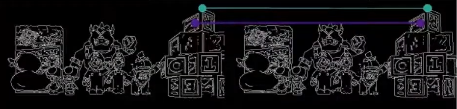
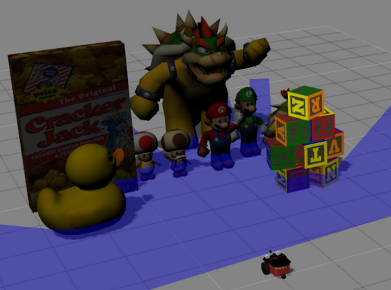

Revisión del ejercicio 3D Reconstruction
Durante esta semana se realizaron diferentes pruebas sobre el ejercicio 3D Reconstruction con el objetivo de comprobar que todos sus componentes funcionaban correctamente. Se revisó el comportamiento general del ejercicio, los visores disponibles y el flujo completo de ejecución para verificar que la experiencia del usuario fuera la esperada.

Tras estas comprobaciones iniciales no se detectaron problemas funcionales en el ejercicio. Tanto los visores como las herramientas de reconstrucción se comportaban correctamente y permitían seguir el desarrollo de la práctica sin incidencias.
Problema detectado con el RTF
Durante las pruebas sí se observó un inconveniente relacionado con el RTF (Real Time Factor) de la simulación. El valor obtenido era relativamente bajo, alrededor de 0.3, lo que afectaba al rendimiento general del ejercicio.
Como primera aproximación se investigaron distintos factores que podían estar influyendo en el rendimiento:
- Resolución de las cámaras utilizadas por el ejercicio.
- Configuración de sombras del mundo de simulación.
- Carga gráfica del escenario.
- Complejidad de los modelos presentes en el entorno.
Ajustando algunos de estos parámetros se consiguió mejorar notablemente el rendimiento, llegando a alcanzar valores cercanos a 0.6 de RTF.
Restricciones del ejercicio
Sin embargo, tras comentarlo con otros miembros del equipo, se decidió que modificar la resolución de las cámaras o la configuración visual del mundo no era una opción válida.
El ejercicio forma parte de un máster relacionado con visión por computador y dichos parámetros tienen impacto directo en el contenido docente. Por este motivo, la resolución de las cámaras y las condiciones visuales del escenario debían mantenerse exactamente igual que en la versión original.
Optimización de modelos
Una vez descartadas las modificaciones sobre sensores y configuración gráfica, la alternativa fue actuar sobre los modelos del escenario.

Se revisaron especialmente los meshes de algunos objetos presentes en el mundo, simplificando aquellos que tenían una complejidad innecesariamente alta para la simulación. Esta optimización permitió reducir la carga computacional manteniendo el mismo aspecto general del entorno.
Gracias a estos cambios se consiguió mejorar el rendimiento hasta alcanzar aproximadamente un RTF de 0.45, obteniendo una mejora significativa sin alterar ninguno de los parámetros docentes del ejercicio.
Conclusión
La revisión permitió confirmar el correcto funcionamiento del ejercicio 3D Reconstruction y detectar un problema de rendimiento relacionado con el RTF. Aunque inicialmente se encontraron soluciones que mejoraban considerablemente la velocidad de simulación, las restricciones del propio ejercicio obligaron a buscar alternativas compatibles con los requisitos docentes. Finalmente, la simplificación de algunos modelos del escenario permitió aumentar el rendimiento manteniendo intactas las características visuales y los sensores utilizados por los estudiantes.